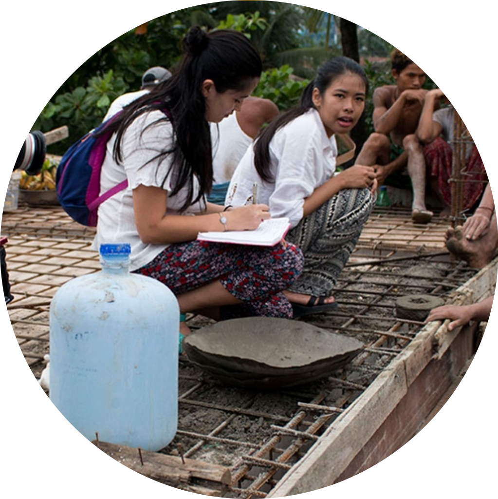
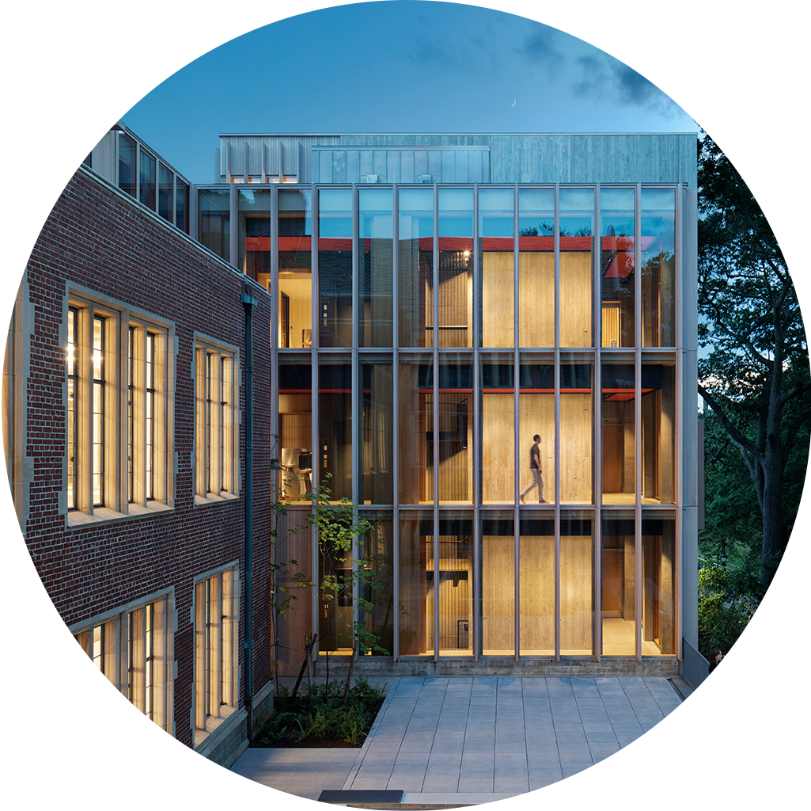

What’s the best way to think about the cost of a Wellesley education?
short answer
The cost is a number.
It changes from year to year. This year it’s $66K—roughly the same number you’d see at any world-class liberal arts college.
That number helps usrecruit and support world-class faculty.
That number helps usmaintain a stunning 500-acre campus that includes an art museum, an arboretum, and an observatory.
That number helps uscontinuously update and improve world-class labs and studios, theaters and playing fields, libraries and residence halls.
There are many other examples of people, programs, and resources that we can’t mention here because this is supposed to be the short answer—all of which adds up to an experience that,in ways both intentional and serendipitous,tangible and abstract, immediate and lasting,has changed the lives of women for nearly 150 years,and, through them, has changed the world.
What’s the best way to think about the cost of a Wellesley education?
The slightly less short answer is that the cost is not the actual cost, in two ways.
▌▌
Joy St. John
Dean of Admission and Financial Aid
The cost is less than the amount it takes to provide each student’s (world-class) education—roughly $102K. Which sounds odd.Shouldn’t we charge studentsas much as (or perhaps quite a bit more than)it costs us to do what we do?Well—we’re a nonprofit enterprise.We operate on a different model, powered by the generosity of our alumnae. Their support builds our endowment and allows us to charge each student far less than the actual cost of doing what we do— and then to reduce (sometimes even eliminate) the cost for students who demonstrate financial need.
To us, when you come to Wellesley, you’re not buying a diploma—you’re investing in a profound, even transformative experience.
▌▌
Andrew Shennan
Provost and Lia Gelin Poorvu ’56 Dean of the College
What’s the best way to think about the cost of a Wellesley education?
A Wellesley education is 2,300 bright, motivated, impossible-to-categorize students from 50 states and 83 countries.
It’s more than 1,000 courses taught only by professors—some of the world’s most engaged, influential scholars, scientists, artists, and innovators.
It’s an 7 to 1 student to faculty ratio-meaning those same professors know you, mentor you, write deeply informed recommendations for you, advocate for your future.
It’s more than 50 majors, including dozens of interdepartmental majors, from architecture to astrophysics, neuroscience to peace and justice studies.

It’s access to more than 150 study abroad programs, as well as global internships, service opportunities, and research fellowships.
It’s access to Boston and Cambridge, a global capital of intellectual, cultural, and technological innovation.
It’s our new Wellesley Career Education Center, a holistic, personalized service for every Wellesley student—a gateway to funded internships, civic engagement, pre-professional experience, and mentorship from staff and alumnae.
It’s an uncommonly inclusive, supportive community—a sisterhood for life.
It’s more than 160 student-run clubs and organizations, 13 Division III athletic teams, and a packed calendar of performances, lectures, workshops, and student-produced culture shows.

It’s a renowned art museum and cultural center featuring more than 10,000 objects and adventurous programming. It’s an expansive Science Center featuring advanced labs and equipment. It’s a landmark visual arts building-and an inspired new collaborative arts center.
It’s 500 sublime acres.
It’s singular resources like our Albright Institute, funding collaborative, transdisciplinary, global projects for dozens of students every year.
It is a worldwide community of tens of thousands of alumnae—fascinating, ambitious, accomplished people who are dedicated to helping Wellesley women.
So: The cost of a Wellesley education is a number—but it’s not a barrier. The value of a Wellesley education—the experience and the community, the skills and the hard-won confidence, the constantly expanding sense of possibility—is approximately infinite.